設計の原本(JSON)を、編集可能な本物のFigmaノードへ。
AIと人が互いに刺激しあうための、母艦。
Claude Code に話しかけると、編集できる"本物のFigmaデザイン"が生まれる。
画像の貼り付けではない。テキストもオートレイアウトも、そのままFigmaで続きを描ける。
Pro / Max のサブスク。設計を翻訳する頭脳。API課金は不要。
生成先。無料プランでOK。ここに本物のレイヤーが建つ。
依存ゼロの中継を動かすだけ。node relay.js
ボード上のフレームを選ぶだけ（外部バナーや手描きもOK）。命名・フォント統一・余白・オートレイアウト化で整え、「色を変えて」「見出しを大きく」と会話で編集。写真は保持。
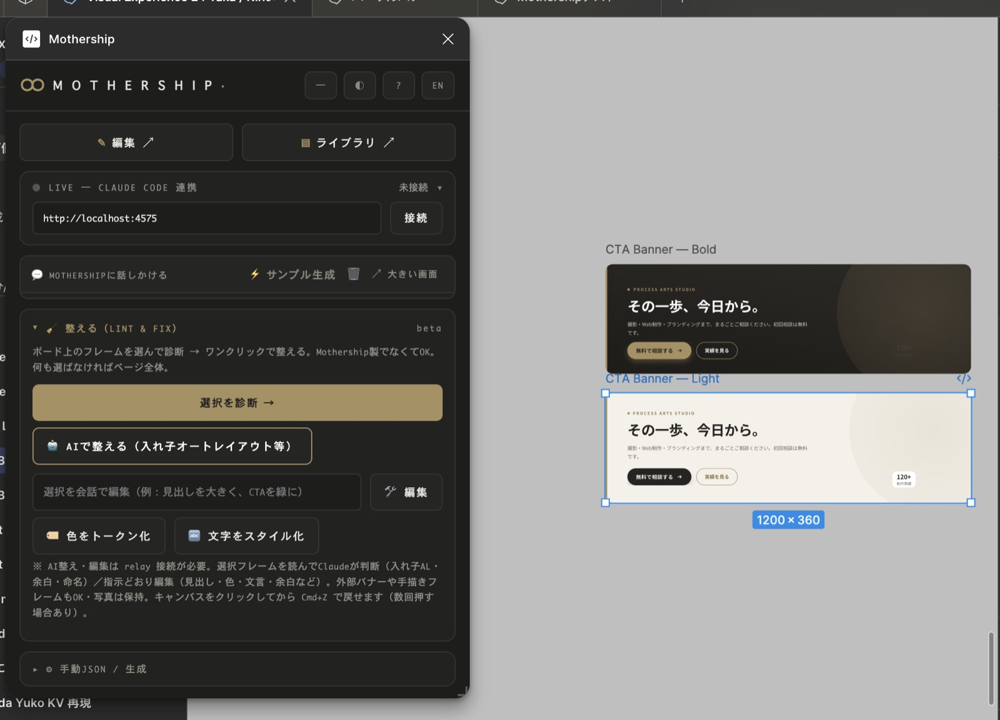
選んだフレームの色を Figma Variables、文字を Text Styles に自動抽出。散らかったhexやタイポが「名前のある型」に揃い、変えれば一括。現場の実デザインからチーム独自のDSが育つ。
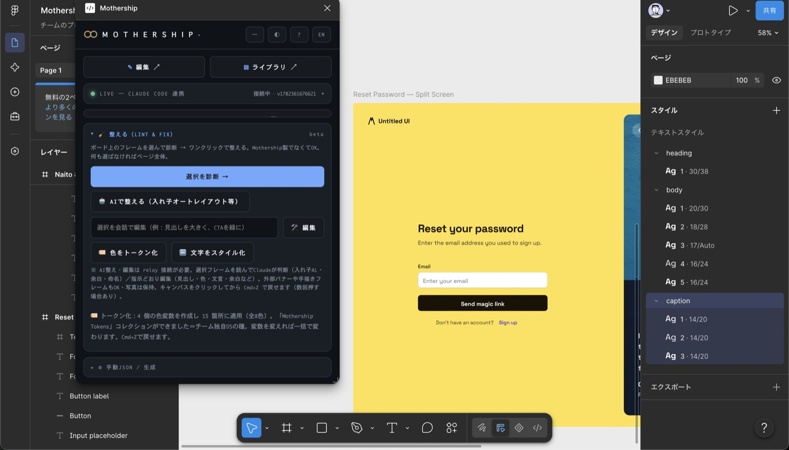
「このサイトのKVを再現して」と頼むと、ページを読み解いて Figma に編集可能なレイヤーとして再構成。座標・余白・配色は算出値どおり、写真も実画像で。
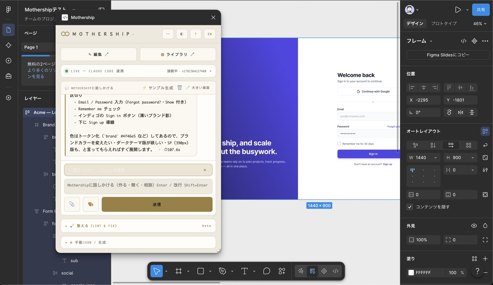
「3プランの料金表を作って」と頼むと、Figmaに本物のレイヤーが建つ。
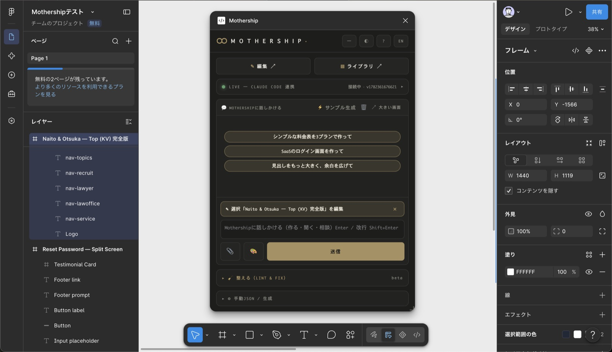
フレーム・テキスト・オートレイアウト・角丸・グラデ・日本語フォント・影・SVGロゴ。画像の貼り付けではない。
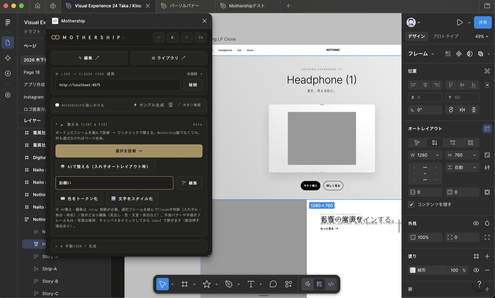
参照画像を重ねて、余白・フォント・位置をピクセル単位で調整。プロの“詰め”を支える。
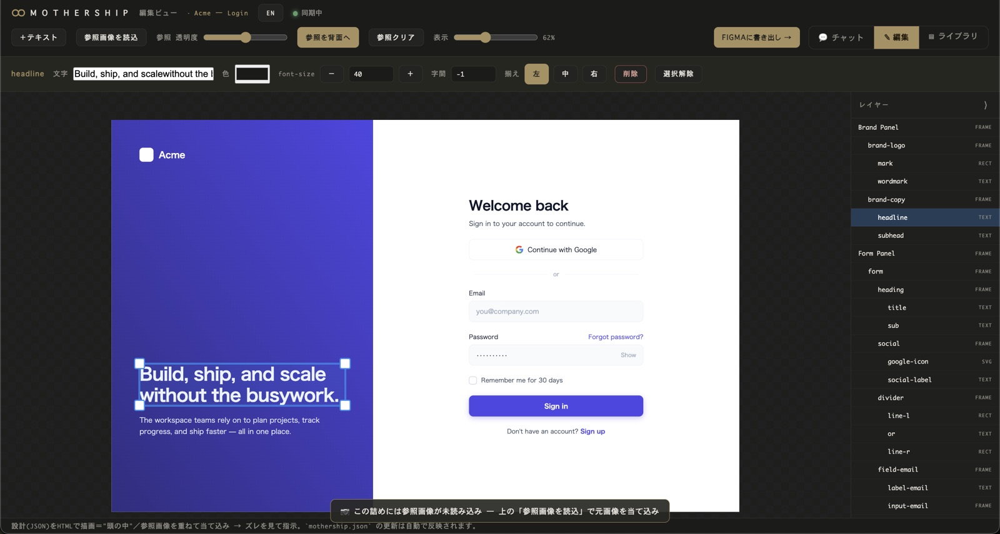
気に入った型を保存 → ワンクリックで再利用。貯めるほど、次が速くなる。
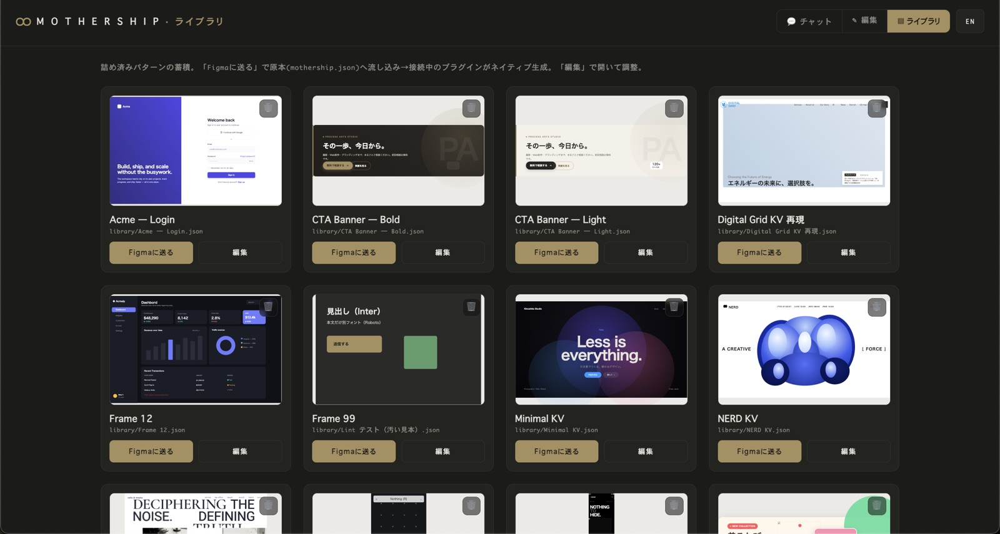
写真が要る箇所は、Midjourney / DALL·E 用のプロンプトを生成して渡せる。
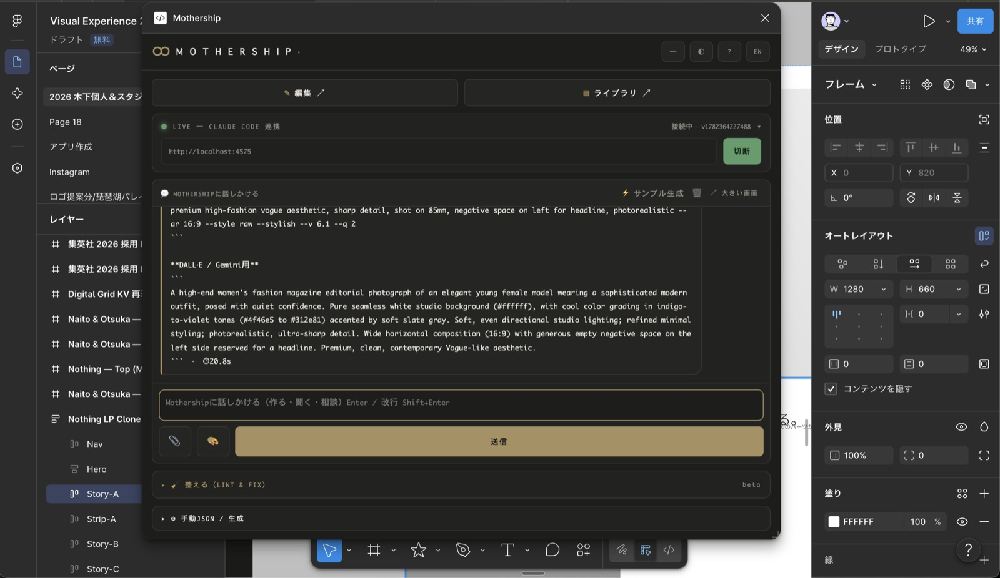
チャットでの修正が、接続中のFigmaに即反映。「もっと大きく」「色を変えて」もその場で。
別APIキーも追加課金も不要。Claude Code の Pro / Max だけ。EN/JP 対応。
「このサイトのKVを再現して」とチャットに打つだけ。Mothershipがページを読み解き、算出スタイルどおりの座標・余白・配色で、写真も実画像で、Figmaに編集可能なレイヤーとして再構成する。
DOMをそのまま数百レイヤーの深いネスト＋絶対座標で吐く。命名もオートレイアウトもトークンも無い“汚い1:1コピー”。結局、整えるのに時間がかかる。
全体を雑に取らず、KV等の1セクションをAIが“意味”で再構成。オートレイアウト・トークン・命名つきの、あなたが所有できる原本JSON。
レイアウト・配色・余白・タイポ（算出値どおり）／実テキスト／写真（実画像・webpも）／ロゴ・見出しのSVG／縦書き等のスプライト文字（実画像で採取）。
ナビ等の取りこぼしを減らす“完全性”の向上／スプライト文字の地の透過／複数セクションの連結。
動画・アニメーション・動的なグラフィック（WebGL等）・インタラクションは、静止のデザインには起こせない＝プレースホルダになる。専有フォントは Figma に無ければ近い代替に。“動き”は写し取れないのが正直なところ。
※ ゴールはピクセル完全コピーではなく「URL → 綺麗で編集可能な“8割の叩き台”を一瞬で」。残りはあなたが詰める。
はじめは違った。Figmaに公式AIが無かった頃、Mothershipは「URL・バナー・サイトのデザインを綺麗に再現／生成する」一本だった。
そこへ Figma 公式のAIが登場した。「チャットでデザインを生成」は、誰でも手に入るものになった。生成だけで公式AIと殴り合うのは、もう現実的じゃない。
だから、戦う場所を変えた。表層のUI生成は入口。本当の価値は——公式AIが苦手な上流（ペルソナ・ジャーニー・フロー）からつくり、ボード上の“すでにある”デザインを読んで整え、所有し、自動化すること。公式AIが作ったものも、誰かが作ったものも、プロ品質に整える共生レイヤーへ。
中心に置くのはAIではなく、原本のJSON。判断は人、翻訳はAI、頭脳は交換できる。
表層のUI生成はFigma公式AIが強い。Mothershipは、公式AIが苦手な上流（ペルソナ・ジャーニー・フロー）からつくり、ボード上の“すでにある”デザインを読んで整え、設計を所有し、繰り返しを自動化する。
| 観点 | Figma 公式AI | html→Figma 系プラグイン | Mothership |
|---|---|---|---|
| 使える人・コスト | 有料プラン向け | プラグイン（無料〜） | プラグイン＋自分の Claude Code（Pro/Max）。追加のAPI課金なし |
| 得意なこと | チャットから新規生成 | 既存サイトを丸ごとダンプ | URLを“意味で”綺麗に1セクション再構成＋整える＋所有 |
| 上流（戦略・設計思考） | △ FigJamで図は作れるが内容は浅く、UIとは別ツール | × UI再現が主目的＝対象外 | ◎ ペルソナ・ジャーニー・フローを“中身まで考えて”生成し、UIまで一つの線で |
| 既存ボードのフレームを整える | 生成が主体（整理は範囲外） | ✕ 取り込み専用 | ◎ Lint & Fix（命名／フォント／整列／オートレイアウト化／不要削除） |
| 他人・他ツール製のフレーム | — | — | ◎ 作られ方を問わず整えられる |
| 既存フレームをチャットで修正 | 生成中心 | ✕ | ◎ 選択 → 読む → 会話で編集（外部フレームも） |
| デザインの所有 | Figma 内に閉じる | ダンプしたら終わり | 原本JSONを所有・永続・再利用 |
| デザインシステム | 既製DSの運用 | — | 色→Variables・文字→Text Styles に自動トークン化→実デザインから独自DSを育てる（開発中） |
| AI（頭脳） | Figma 固定 | AIなし（変換のみ） | 交換可能（Claude／Gemini／次のモデルでも） |
※ 各社の機能・プランは変わります（最新は各公式をご確認ください）。「構築中」は順次アップデート予定。
Mothershipは、デザインを mothership.json という一枚の原本として持つ。 Claude Code が"コードを書くのと同じ"でそれを編集し、プラグインが 本物のFigmaノードとして建てる。 SVGの貼り付けではない。テキストもオートレイアウトも、そのまま編集できる。
バナーやUIを高い精度で生むだけでも強い。さらにその上流——ペルソナ・カスタマージャーニー・ユーザーフロー——まで、話すだけでFigmaに。中身は「箱と文字」が主役だから精度も出しやすく、Claude Codeの“頭脳”が図の中身まで考える。
「このSaaSのペルソナを3体」と頼むと、属性・課題・ゴール・行動まで考えて、編集可能なペルソナカードに。空欄を埋める作業が消える。
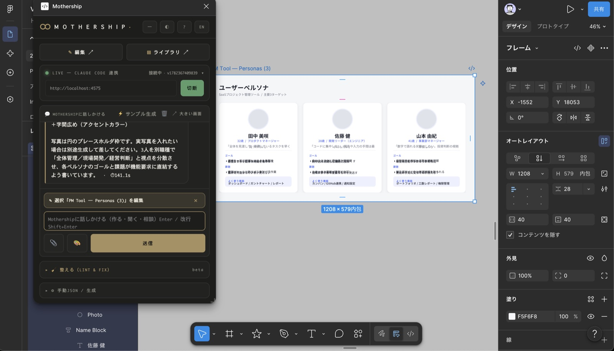
段階 ×（行動・感情・タッチポイント・課題・施策）。感情曲線まで構造化して、その場で叩き台に。Miro/FigJamへ移らなくていい。
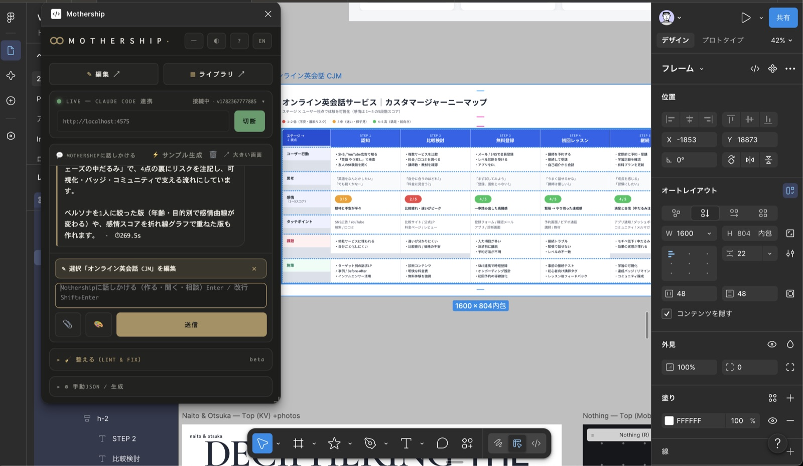
ユーザーフロー・サイトマップ・情報設計をノードと線で。ゼロから箱を並べる作業が、初稿から始まる。
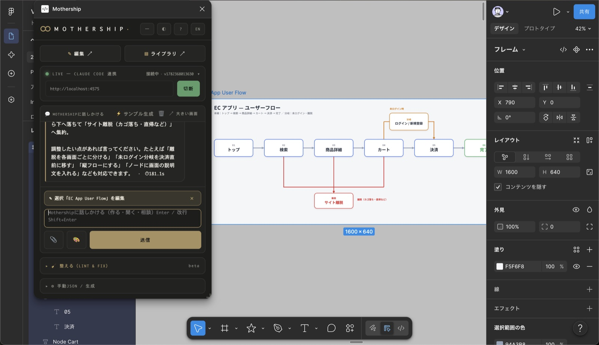
※ いずれも今の生成エンジンで動く＝プラグイン更新不要。UI（入口）から上流の設計思考まで、ひとつの母艦で。
あなたの言葉が原本になり、Figmaのレイヤーになる。

フレーム、テキスト、オートレイアウト、角丸、グラデ、日本語フォント、影。 すべてが編集可能なネイティブノードとして生成される。だから強いFigmaユーザーが、そのまま続きを描ける。

原本はただのファイル。だからAIが直接編集できる。MCPは不要、API課金も不要——Claude Code の Pro / Max だけで、チャットからFigmaまで完結する。 そして中心に置くのはAIではなく、原本のJSON。だからAIは交換可能になり、モデルが変わっても資産は残る。relayとプラグインはAIを一切呼ばない、ただの配管とレンダラー。
表層の「UI生成」はFigmaのAIが担う時代へ。Mothershipは上流（設計・戦略）からつくり、所有・整える・自動化する。
チャットでネイティブ生成。さらに選択画面の構造を読み、レイアウト崩れ・命名・浮いた要素を整える。原本は、あなたが所有するJSON。
デザインを資産にしたい人。デザインシステムをコードで運用する開発寄りデザイナー／チーム。公式AIの生成物を、実装できる形に整えたい人。
Claude も Gemini も次のAIも、頭脳として差し替えられる。「公式AIがUIをつくる」×「Mothershipが上流からつくり・整え・自動化する」——共生のレイヤーへ。
※ ステータスは目安。進行中／開発中＝着手済、予定・構想＝検討中。順次アップデート。
※ 機能はローカル relay 経由で随時更新（プラグイン本体の再申請なしで拡張）。